表达式 expression
回忆
- 关于
函数function，我们回忆一下- 可以查询
- 可以新建
- 可以调用
- 还可以删除
- 我想用
函数function往buffuer里面写点东西 - 比如写一个java的基本程序框架
- 这样一调用就好使了
- 省的自己打了
- 可以么？🤔
追加函数
- 应该如何去找关于写
buffer的函数呢？ :h- 找到用户手册41.6
- 找到这一类的函数
- 属于text-functions
- 文本函数
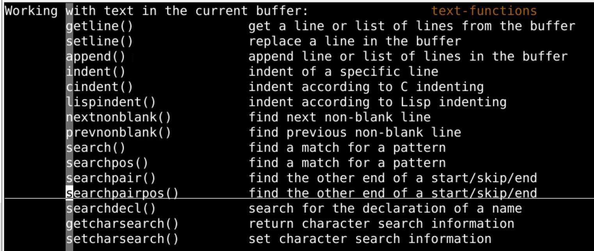
追加函数
:h append()
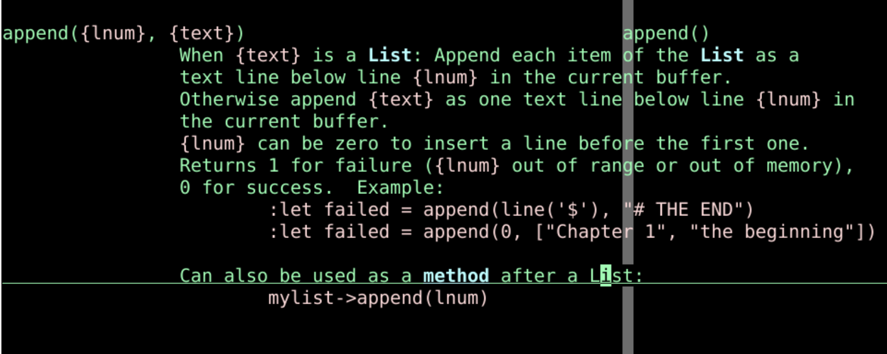
- 帮助中提到了{lnum}可以是0
- 我来试试
函数初试
:call append(0,"oeasy o2z o3z"):call append(0,"111oeasy o2z o3z o4z"):call append(0,"222oeasy o2z o3z o4z")-
:call append(1,"3333oeasy o2z o3z o4z") -
结论是可以插入
- 一次在指定位置插一行
- 如果想要插入最上面一行
- 使用
:call append(0,"在第一行插入")
- 使用
插入框架
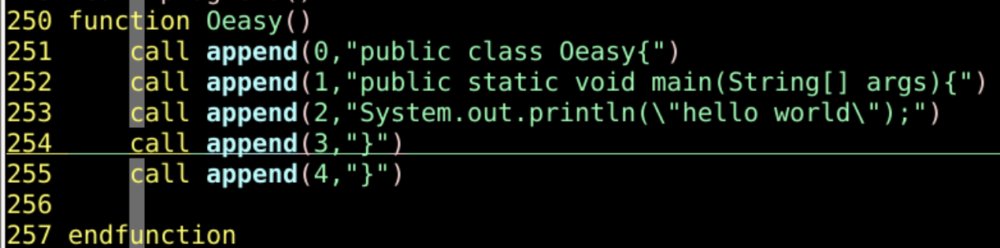
- 再重新进入vi
:call Oeasy()- 试验成功
- 但是这个应该是只对于java文件起作用的？
- 应该如何写？
- 先把这段函数复制下来
ftplugin文件类型插件
- 使用文件类型插件有两种方式
- 所有用户共享文件类型插件
vi /usr/share/vim/vim81/ftplugin/java.vim
- 当前用户独有的文件类型插件
mkdir -p ~/.vim/ftpluginvi ~/.vim/ftplugin/java.vim
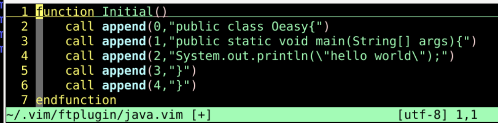
- 函数名改成Initial
- 保存并退出
文件类型初始化
- 在css文件中调用函数
vi Oeasy.css:call Initial()- 找不到函数
- 在java文件中调用函数
vi Oeasy.java:call Initial()- 插入成功
- 但是这个不够通用
- 要是能关联当前文件的文件名作为类名就好了
使用文件名
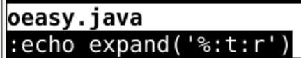
:echo expand('%:t:r')- 这是可以显示当前的文件名的
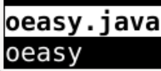
- 这原理是什么呢？
:h %:t
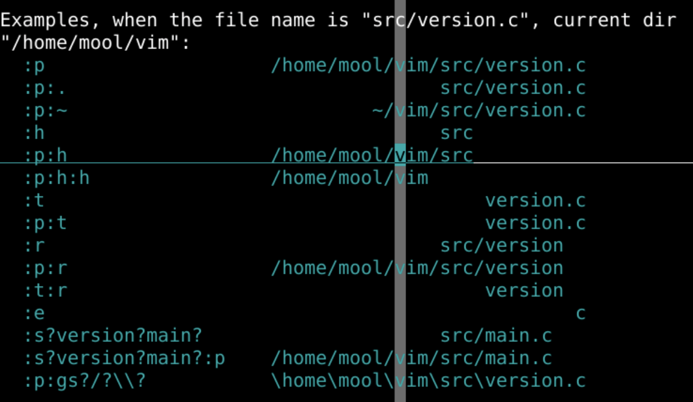
整合
- 把这个整合到Initial函数里面
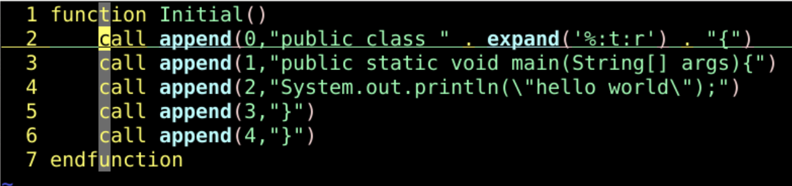
- 试验成功
- 我想要调整整个buffer的缩进，怎么办呢？
gg=G
- 但是我想把这条命令整合到Intial函数里面可能么？
表达式
- 怎么执行正常模式的命令呢？
:h :normal
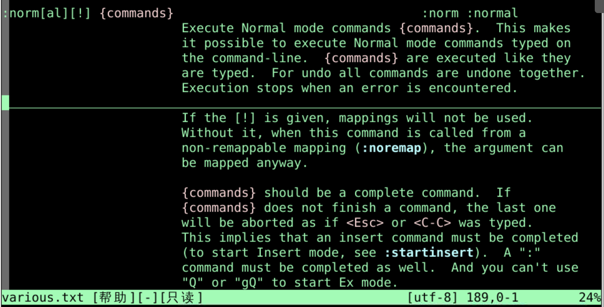
:normal gg=G- 试验成功
normal gg=G是一个命令表达式- 但是怎么在函数里面执行这个表达式呢？
执行命令表达式
- 先u回来
:h execute
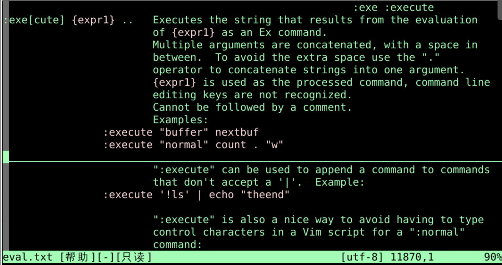
- 可以在函数里面执行表达式
- 什么是表达式呢？
- 就是刚才的Ex command
:execute "normal gg=G"- 试验成功
-
缩进之后我可以保存么？
-
:execute "w"- 试验成功
:call execute("w")- 也试验成功
- 下面尝试放到函数里
在函数里执行表达式

:call Init()- 调用成功！
- 缩进和保存都是ok的！
建立映射
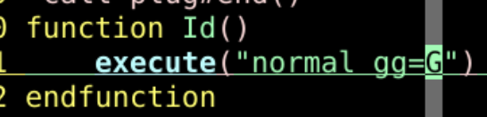
:source %:call Id():map ... :call Id()<CR>:10,30>>...
总结
- 关于 函数
function- 可以调用别的函数
:call append(0,"oeasy o2z o3z")
- 还可以执行表达式
:call execute("normal gg=G")
- 可以调用别的函数
- 这样就可以把一系列的操作封装到一个函数里面
- 然后在命令行模式调用就可以了
- 但如果我想不用`:call Init()"
- 而是像
:ls一样执行:init，可能么？🤔 - 下次再说！